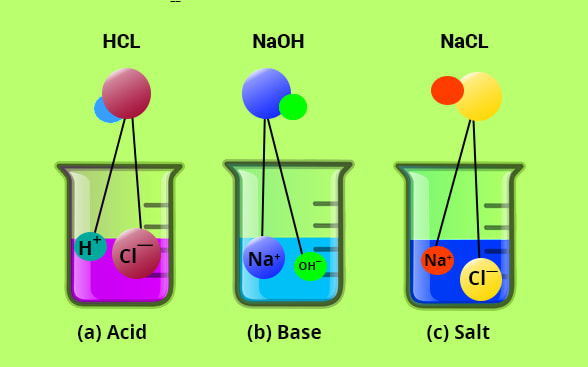

Now we are going to learn all about acids and bases
- ACIDS
- a substance with particular chemical properties including turning litmus red, neutralizing alkalis, and dissolving some metals; typically, a corrosive or sour-tasting liquid of this kind.
- BASES
- a substance capable of reacting with an acid to form a salt and water, or (more broadly) of accepting or neutralizing hydrogen ions.
Now we will discuss the characteristics of acids and bases.
CHARACTERISTICS OF ACIDS
- Acids are sour by nature
- pH value is always below 7
- when an acid reacts with a base it forms salt and water,HCL+NaOH=NaCL+H2O
- when an acid reacts with a metal it forms salt and hydrogen gas

CHARACTERISTICS OF BASES
- Bases are bitter by nature
- pH value is always greater than 7
- when base reacts with acid it forms salt and water
- Bases are good conductors of electricity
These are all the strong acids and bases
STRONG ACIDS
Hydrochloric acid (HCL)
Nitric acid (HNO3)
Sulphuric acid (H2SO4)
Hydrobromic acid (HBr)
Hydroiodic acid (HI)
Chloric acid (HClO3)
Perchloric acid (HClO4)
These are very strong acids
STRONG BASES
Lithium hydroxide (LiOH)
Sodium hydroxide (NaOH)
Potassium hydroxide (kOH)
Rubidium hydroxide (RbOH)
Cesium Hydroxide (CsOH)
Calcium hydroxide (ca(OH)2
Strontium hydroxide (Sr(OH)2
Barium hydroxide (BaOH)
These are very strong bases